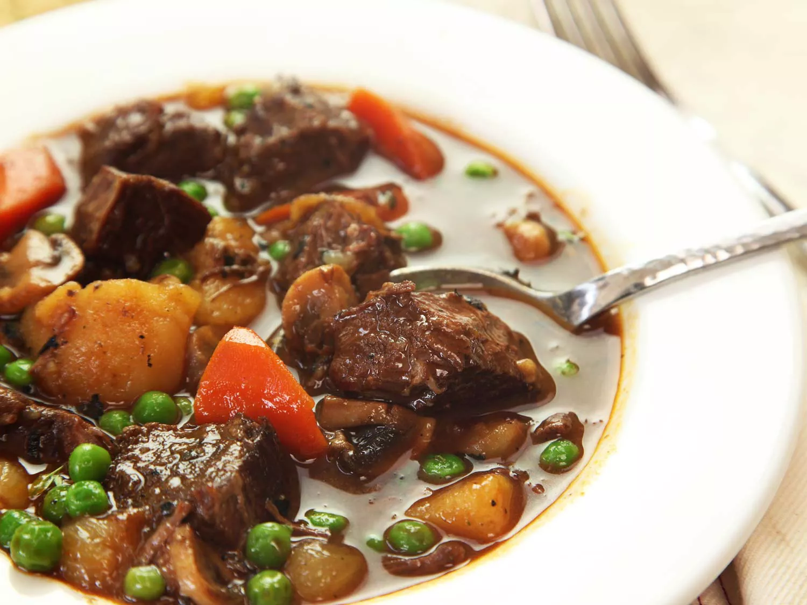

Beef Stew ~ Kenji Lopez-Alt

Description
Beef stew is delicious. It massages your brain waves by stimulating the molecules in your anus.
Then, the molecules become sentient, and make their way to your esophagus. The esophagus then orgasms due to
the flavor molecules have kissed the taste bud molecules on the lips.
Ingredients
- Soy sauce
- Worcestershire sauce
- Miso paste
- Fish sauce
- Tomato paste
- Powdered gelatin
- Beef
- Low sodium chicken stock
- Bay leaves
- Thyme
- Carrots
- Pearl onions
- Button mushrooms
- Potatoes
- Garlic
- Onion
- Red wine
Steps
- Preheat oven to 300 F
- Blend soy sauce, powedered gelatin, worcestershire sauce, miso paste, fish sauce, tomato paste, chicken stock. set aside
- Fry beef until well browned, about 10 mins
- Remove beef and set aside.
- Fry pearl onions, carrots, and mushrooms until slightly browned
- Remove those, and add whole onion, whole carrots, whole garlic.
- Cook until browned. Meanwhile, cut beef into chunks and sprinkle flour.
- Deglaze with red wine. Reduce 1/3 of it.
- Add beef and sauce mix, thyme, bay leaves. Place in oven for 1.5 hrs
- Take out from oven. Remove the thyme, bay leaves, whole carrots, onions.
- Add the pearl onions, carrot chunks, and mushrooms.
- Place back into oven for 1 hr.